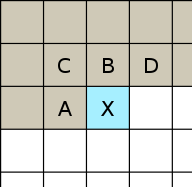
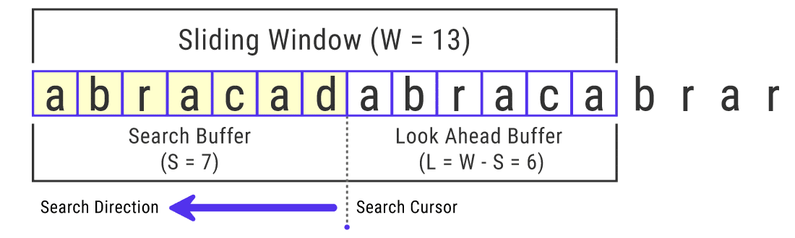

(Si se arrastra la imagen de los plátanos, se puede notar que su fondo es totalmente transparente)
Es un formato de archivos gráficos de mapa de bits. Permite un alto grado de compresión, reproducción progresiva de imágenes con hasta 16.7 millones de colores y soporta la transparencia en imágenes.
Almacena el número de canales que tenga la imagen, si está en escala de grises, en color y si cuenta con un canal de transparencia.
Almacena los valores gamma y el color del fondo de la imagen, soporta corrección de color e independiza la imagen del monitor.
Soporta una profundidad de color de 16 bits por píxel en imágenes monocromáticas en escala de grises y 48 bits por píxel en imágenes en el espacio de color RGB.
Incluye bits de corrección de errores en el archivo de imagen codificado.
PNG suele ser drásticamente más lento durante la codificación que otros algoritmos de imagen.
PNG es muy utilizado cuando se desea comprimir imágenes sin pérdidas y poder mostrar imágenes de alta calidad en pantallas, con precisión de colores y formas nítidas. También son útiles para representar imágenes con transparencia.
Sin embargo, PNG no es apto para todos los casos de uso. Principalmente, no es buen formato para la impresión de imágenes en papel, puesto que las impresoras utilizan el modelo de color CMYK, no soportado por PNG. Tampoco es posible incluir múltiples imágenes en un solo archivo, cosa que si puede hacerse con GIF.
El algoritmo de codificación de PNG requiere más computación que otros algoritmos, como el de JPEG. La compresión también es menos eficaz, puesto que PNG es un formato sin pérdidas.
PNG fue creado por el grupo llamado con su mismo nombre, conformado por las empresas Compuserve, Netscape, Spyglass y el consorcio W3C. Fue desarrollado en 1995 como una alternativa gratuita al formato GIF, cuyos derechos pertenecen a Unisys.
1996
La especificación completa de PNG fue publicada por la W3C, y un año más tarde bajo el RFC 2083.
1998
Se publicó la versión 1.1 del estándar, que abordaba problemas técnicos para gamma y corrección de color.
1999
La versión 1.2 de PNG fue lanzada en Agosto de 1999 y agregó soporte para el fragmento iTxt como único cambio.
2003
La versión formateada de la versión 1.2 fue lanzada como la segunda edición del estándar.
2004
PNG fue publicado como estándar internacional como ISO/IEC 15948:2004.
PNG utiliza un proceso de compresión de dos etapas:
Filtrado
El algoritmo DEFLATE es muy útil para aprovechar la redundancia en los datos de una imagen. Para facilitar la compresión, PNG "prepara" la imagen aplicando uno de 5 filtros diferentes.
Algoritmo de compresión sin pérdidas DEFLATE
Este algoritmo de uso libre involucra una combinación de LZ77 y codificación Huffman para lograr la compresión de la imagen sin ninguna pérdia de información.
Al ser un formato de imagen sin pérdidas, el proceso de codificación puede ser ejecutado a la inversa para la decodificación y la imagen decodificada será exactamente igual a la imagen originalmente codificada.
El algoritmo de compresión DEFLATE, basado en LZ77 y codificación Huffman, tiene un rendimiento inadecuado cuando no es capaz de encontrar valores redundantes en los datos de la imagen. Esto puede suceder aún cuando la información de la imagen posee patrones que son claramente aprovechables por su redundancia, tales como diferencias similares.
Por ejemplo, si una fila de bytes de una imagen tiene valores totalmente distintos, pero estos valores tienen una diferencia de 6 con respecto al byte anterior, se podría representar la fila como un valor inicial seguido las diferencias de todos los valores siguientes, con respecto a sus valores anteriores. Una fila como { 20, 26, 32, 38, 44 } produciría una fila similar a { 20, 6, 6, 6, 6 }, que puede ser comprimida como { 20, (4, 6)}.
Para aprovechar esto, PNG utiliza cinco diferentes filtros en su primera etapa de codificación:
Ninguno
Este filtro no realiza ninguna transformación sobre la información de la imagen.
SUB
Este filtro produce como resultado la diferencia entre el valor del byte actual y el valor del byte anterior, módulo 256 (por los valores de 8 bits).
Por ejemplo, el byte con valor "140", con "133" como su byte anterior, produciría un byte resultante de "7". Un byte con valor "140" con "151" como su byte anterior resultaría en "245", dado que los bytes no tienen signo y el valor anterior es mayor que el actual.
UP
El filtro "superior" o "arriba" realiza la misma operación de diferencia que el filtro SUB, pero en vez de usar el valor del byte anterior toma el valor del byte directamente sobre el byte actual (si se representa como una matriz de bytes, tomaría el byte en la fila anterior a la del byte actual).
PROMEDIO
El filtro "promedio" realiza una diferencia del byte actual con el promedio del byte a su izquierda y el byte arriba el byte actual.
"PAETH"
Es el filtro con la operación más compleja de todos los filtros. En general, solo "elige" el mejor píxel de entre los 3 vecinos del píxel actual para obtener un mejor resultado.
Dados los bytes I (Izquierda), A (Arriba) e IA (Arriba a la izquierda). Inicia obteniendo un valor base "B", realizando la operación B = A + I - IA. Luego obtiene 3 valores, definidos como la diferencia entre el valor B con cada uno de los tres valores de byte iniciales. Determina el menor valor de estos 3 nuevos valores y lo resta al valor del byte actual, para obtener el resultado del filtro.
Como es de esperar, ciertos filtros producen mejores resultados con ciertos patrones de datos. PNG determina cuál es el mejor filtro para una fila dada por medio de la "suma mínima de diferencias absolutas". Esta operación es realizada por cada uno de los 5 filtros, por cada fila de la imagen. El filtro que produzca los resultados con la menor diferencia absoluta entre ellos es elegido como el filtro aplicado a la fila. En general, mientras menos varíen los datos resultantes de un filtro, mejores serán los resultados de compresión del algoritmo DEFLATE.
En la segunda etapa de la codificación, PNG utiliza el algoritmo de compresión Lempel-Ziv, publicado en 1977. Este algoritmo consiste en buscar coincidencias de datos existentes en los bytes siguientes del byte actual, para poder almacenarlos como una referencia a los datos existentes.
LZ77 tiene dos componentes fundamentales: una "ventana deslizante" y un "buffer de avistamiento" o "Look Ahead Buffer." Ambos elementos forman lo que se conoce como el "buffer de búsqueda", que tiene una longitud equivalente a la suma de la longitud de los dos elementos que lo forman.
PNG utiliza un tamaño de ventana deslizante de aproximadamente 32 kB, con la intención de aumentar la posibilidad de encontrar coincidencias.
Para realizar la compresión, la ventana deslizante y el bufer de avistamiento se colocan de manera contigua y los datos de la imagen son recorridos, byte por byte, de derecha a izquierda. Esto se muestra en la siguiente imagen:
Cada vez que la información se recorre una posición a la izquierda, el algoritmo revisa si existen coincidencias entre los bytes en el buffer de avistamiento y cualquier cadena en la ventana deslizante. Es importante notar que busca la coincidencia con mayor longitud. De esta manera, si se encuentran "a" y "ab" como coincidencias de "ab" en el buffer, el algoritmo creará una referencia a la segunda. LZ77 de PNG solo crea una referencia si la cadena tiene una longitud mayor o igual a 3.
Cada referencia creada por el algoritmo contiene dos datos: la longitud de la cadena comprimida y el offset entre el inicio de la cadena original (en la ventana deslizante) y el inicio de la cadena coincidente.
En la imagen anterior, existe una coincidencia para la cadena "abraca". LZ77, en vez de recorrer un caracter, remueve la cadena coincidente y crea una referencia con una longitud de 6 valores y un offset de 7.
Finalmente, PNG utiliza una versión específica del algoritmo de codificación Huffman para reducir aún más los valores individuales resultantes del proceso de compresión con LZ77.